Introduction
Welcome to GeoServer development. The project makes use of a number of resources:
- https://github.com/geoserver/geoserver.github.io/wiki Wiki used for Proposals
- https://github.com/geoserver/geoserver Github source code
- https://osgeo-org.atlassian.net/projects/GEOS Jira issue tracker
- GeoServer User Manual
- GeoServer Developer Manual
Communication channels:
- http://blog.geoserver.org/
- geoserver-devel email list
- geoserver-users email list
- irc://irc.freenode.net/#geoserver
We have a number of build servers employed to assist with day to day activities:
- https://build.geoserver.org/view/geoserver/ (main build server)
- http://office.geo-solutions.it/jenkins/ (windows build server)
- http://aaime.no-ip.org/jenkins/ (JDK 7)
- http://aaime.no-ip.org/sonar/ (Sonar)
Notification email lists:
- https://groups.google.com/forum/#!forum/geoserver-commits
- https://groups.google.com/forum/#!forum/geoserver-extra-builds
Question and answer:
- http://gis.stackexchange.com/questions/tagged/geoserver
- http://stackoverflow.com/questions/tagged/geoserver
Tools
The following tools need to installed on the system before a GeoServer developer environment can be set up.
Java
Developing with GeoServer requires a Java Development Kit (JDK), version 8 or greater, available from Oracle or OpenJDK
Maven
GeoServer uses a tool known as Maven to build.
Maven tracks global settings in your home directory .m2/settings.xml. This file is used to control global options such as proxy settings or listing repository mirrors to download from.
Git
GeoServer source code is stored and version in a git repository on github There are a variety of git clients available for a number of different platforms. Visit http://git-scm.com/ for more details.
Source Code
The GeoServer source code is located on GitHub at:
https://github.com/geoserver/geoserver.
To clone the repository:1
% git clone git://github.com/geoserver/geoserver.git geoserver
To list available branches in the repository:1
2
3
4% git branch
2.1.x
2.2.x
* master
To switch to the stable branch:1
% git checkout 2.2.x
Git
Those coming from a Subversion or CSV background will find the Git learning curve is a steep one. Luckily there is lots of great documentation around. Before continuing developers should take the time to educate themselves about git. The following are good references:
Committing
In order to commit to the repository the following steps must be taken:
- Configure your git client for cross platform projects. See notes below.
- Register for commit access as described here.
- Fork the canonical GeoServer repository into your github account.
- Clone the forked repository to create a local repository
- Create a remote reference to the canonical repository using a non-read only URL (
git@github.com:geoserver/geoserver.git).
Note: The next section describes how the git repositories are distributed for the project and how to manage local repository remote references.
Repository distribution
Git is a distributed versioning system which means there is strictly no notion of a single central repository, but many distributed ones. For GeoServer these are:
- The canonical repository located on GitHub that serves as the official authoritative copy of the source code for project
- Developers’ forked repositories on GitHub. These repositories generally contain everything in the canonical repository, as well any feature or topic branches a developer is working on and wishes to back up or share.
- Developers’ local repositories on their own systems. This is where development work is actually done.
Even though there are numerous copies of the repository they can all interoperate because they share a common history. This is the magic of git!
In order to interoperate with other repositories hosted on GitHub, a local repository must contain remote references to them. A local repository typically contains the following remote references:
- A remote called origin that points to the developers’ forked GitHub repository.
- A remote called upstream that points to the canonical GitHub repository.
- Optionally, some remotes that point to other developers’ forked repositories on GitHub.
To set up a local repository in this manner:
Clone your fork of the canonical repository (where “bob” is replaced with your GitHub account name):
1
2% git clone git@github.com:bob/geoserver.git geoserver
% cd geoserverCreate the
upstreamremote pointing to the canonical repository:1
2
3% git remote add upstream git@github.com:geoserver/geoserver.git
# Or if your account does not have push access to the canonical repository use the read-only url:
% git remote add upstream git://github.com/geoserver/geoserver.gitOptionally, create remotes pointing to other developer’s forks. These remotes are typically read-only:
1
2% git remote add aaime git://github.com/aaime/geoserver.git
% git remote add jdeolive git://github.com/jdeolive/geoserver.git
Repository structure
A git repository contains a number of branches. These branches fall into three categories:
- Primary branches that correspond to major versions of the software
- Release branches that are used to manage releases of the primary branches
- Feature or topic branches that developers do development on
Primary branches
Primary branches are present in all repositories and correspond to the main release streams of the project. These branches consist of:
- The master branch that is the current unstable development version of the project
- The current stable branch that is the current stable development version of the project
- The branches for previous stable versions
For example at present these branches are:
- master - The 2.3.x release stream, where unstable development such as major new features take place
- 2.2.x - The 2.2.x release stream, where stable development such as bug fixing and stable features take place
- 2.1.x - The 2.1.x release stream, which is at end-of-life and has no active development
Release branches
Release branches are used to manage releases of stable branches. For each stable primary branch there is a corresponding release branch. At present this includes:
- rel_2.2.x - The stable release branch
- rel_2.1.x - The previous stable release branch
Release branches are only used during a versioned release of the software. At any given time a release branch corresponds to the exact state of the last release from that branch. During release these branches are tagged.
Release branches are also present in all repositories.
Feature branches
Feature branches are what developers use for day-to-day development. This can include small-scale bug fixes or major new features. Feature branches serve as a staging area for work that allows a developer to freely commit to them without affecting the primary branches. For this reason feature branches generally only live in a developer’s local repository, and possibly their remote forked repository. Feature branches are never pushed up into the canonical repository.
When a developer feels a particular feature is complete enough the feature branch is merged into a primary branch, usually master. If the work is suitable for the current stable branch the changeset can be ported back to the stable branch as well. This is explained in greater detail in the Development workflow section.
Codebase structure
Each branch has the following structure:1
2
3
4build/
doc/
src/
data/
build- release and continuous integration scriptsdoc- sources for the user and developer guidessrc- java sources for GeoServer itselfdata- a variety of GeoServer data directories / configurations
Git client configuration
When a repository is shared across different platforms it is necessary to have a strategy in place for dealing with file line endings. In general git is pretty good about dealing this without explicit configuration but to be safe developers should set the core.autocrlf setting to “input”:
1 | % git config --global core.autocrlf input |
The value “input” essentially tells git to respect whatever line ending form is present in the git repository.
Note: It is also a good idea, especially for Windows users, to set the
core.safecrlfoption to “true”:
This will basically prevent commits that may potentially modify file line endings.
Some useful reading on this subject:
- http://www.kernel.org/pub/software/scm/git/docs/git-config.html
- https://help.github.com/articles/dealing-with-line-endings
- http://stackoverflow.com/questions/170961/whats-the-best-crlf-handling-strategy-with-git
Development workflow
This section contains examples of workflows a developer will typically use on a daily basis. To follow these examples it is crucial to understand the phases that a changeset goes though in the git workflow. The lifecycle of a single changeset is:
- The change is made in a developer’s local repository.
- The change is staged for commit.
- The staged change is committed.
- The committed changed is pushed up to a remote repository
There are many variations on this general workflow. For instance, it is common to make many local commits and then push them all up in batch to a remote repository. Also, for brevity multiple local commits may be squashed into a single final commit.
Updating from canonical
Generally developers always work on a recent version of the official source code. The following example shows how to pull down the latest changes for the master branch from the canonical repository:1
2% git checkout master
% git pull upstream master
Similarly for the stable branch:1
2% git checkout 2.2.x
% git pull upstream 2.2.x
Making local changes
As mentioned above, git has a two-phase workflow in which changes are first staged and then committed locally. For example, to change, stage and commit a single file:1
2
3
4% git checkout master
# do some work on file x
% git add x
% git commit -m "commit message" x
Again there are many variations but generally the staging process involves using git add to stage files that have been added or modified, and git rm to stage files that have been deleted. git mv is used to move files and stage the changes in one step.
At any time you can run git status to check what files have been changed in the working area and what has been staged for commit. It also shows the current branch, which is useful when switching frequently between branches.
Pushing changes to canonical
Once a developer has made some local commits they generally will want to push them up to a remote repository. For the primary branches these commits should always be pushed up to the canonical repository. If they are for some reason not suitable to be pushed to the canonical repository then the work should not be done on a primary branch, but on a feature branch.
For example, to push a local bug fix up to the canonical master branch:1
2
3
4
5
6% git checkout master
# make a change
% git add/rm/mv ...
% git commit -m "making change x"
% git pull upstream master
% git push upstream master
The example shows the practice of first pulling from canonical before pushing to it. Developers should always do this. In fact, if there are commits in canonical that have not been pulled down, by default git will not allow you to push the change until you have pulled those commits.
Note: A merge commit may occur when one branch is merged with another.
A merge commit occurs when two branches are merged and the merge is not a “fast-forward” merge.
This happens when the target branch has changed since the commits were created.
Fast-forward merges are worth reading about.
An easy way to avoid merge commits is to do a “rebase” when pulling down changes:1
% git pull --rebase upstream master
The rebase makes local changes appear in git history after the changes that are pulled down. This allows the following merge to be fast-forward. This is not a required practice since merge commits are fairly harmless, but they should be avoided where possible since they clutter up the commit history and make the git log harder to read.
Working with feature branches
As mentioned before, it is always a good idea to work on a feature branch rather than directly on a primary branch. A classic problem every developer who has used a version control system has run into is when they have worked on a feature locally and made a ton of changes, but then need to switch context to work on some other feature or bug fix. The developer tries to make the fix in the midst of the other changes and ends up committing a file that should not have been changed. Feature branches are the remedy for this problem.
To create a new feature branch off the master branch:1
2
3
4% git checkout -b my_feature master
% # make some changes
% git add/rm, etc...
% git commit -m "first part of my_feature"
Rinse, wash, repeat. The nice about thing about using a feature branch is that it is easy to switch context to work on something else. Just git checkout whatever other branch you need to work on, and then return to the feature branch when ready.
Note: When a branch is checked out, all the files in the working area are modified to reflect the current state of the branch. When using development tools which cache the state of the project (such as Eclipse) it may be necessary to refresh their state to match the file system. If the branch is very different it may even be necessary to perform a rebuild so that build artifacts match the modified source code.
Merging feature branches
Once a developer is done with a feature branch it must be merged into one of the primary branches and pushed up to the canonical repository. The way to do this is with the git merge command:1
2% git checkout master
% git merge my_feature
It’s as easy as that. After the feature branch has been merged into the primary branch push it up as described before:1
2% git pull --rebase upstream master
% git push upstream master
Porting changes between primary branches
Often a single change (such as a bug fix) has to be committed to multiple branches. Unfortunately primary branches cannot be merged with the git merge command. Instead we use git cherry-pick.
As an example consider making a change to master:1
2
3
4
5
6% git checkout master
% # make the change
% git add/rm/etc...
% git commit -m "fixing bug GEOS-XYZ"
% git pull --rebase upstream master
% git push upstream master
We want to backport the bug fix to the stable branch as well. To do so we have to note the commit id of the change we just made on master. The git log command will provide this. Let’s assume the commit id is “123”. Backporting to the stable branch then becomes:1
2
3
4% git checkout 2.2.x
% git cherry-pick 123
% git pull --rebase upstream 2.2.x
% git push upstream 2.2.x
Cleaning up feature branches
Consider the following situation. A developer has been working on a feature branch and has gone back and forth to and from it making commits here and there. The result is that the feature branch has accumulated a number of commits on it. But all the commits are related, and what we want is really just one commit.
This is easy with git and you have two options:
- Do an interactive rebase on the feature branch
- Do a merge with squash
Interactive rebase
Rebasing allows us to rewrite the commits on a branch, deleting commits we don’t want, or merging commits that should really be done. You can read more about interactive rebasing here.
Warning: Much care should be taken with rebasing. You should never rebase commits that are public (that is, commits that have been copied outside your local repository). Rebasing public commits changes branch history and results in the inability to merge with other repositories.
The following example shows an interactive rebase on a feature branch:1
2% git checkout my_feature
% git log
The git log shows the current commit on the branch is commit “123”. We make some changes and commit the result:1
% git commit "fixing bug x" # results in commit 456
We realize we forgot to stage a change before committing, so we add the file and commit:1
% git commit -m "oops, forgot to commit that file" # results in commit 678
Then we notice a small mistake, so we fix and commit again:1
% git commit -m "darn, made a typo" # results in commit #910
At this point we have three commits when what we really want is one. So we rebase, specifying the revision immediately prior to the first commit:1
% git rebase -i 123
This invokes an editor that allows indicating which commits should be combined. Git then squashes the commits into an equivalent single commit. After this we can merge the cleaned-up feature branch into master as usual:1
2% git checkout master
% git merge my_feature
Again, be sure to read up on this feature before attempting to use it. And again, never rebase a public commit.
Merge with squash
The git merge command takes an option --squash that performs the merge
against the working area but does not commit the result to the target branch.
This squashes all the commits from the feature branch into a single changeset that
is staged and ready to be committed:
More useful reading
The content in this section is not intended to be a comprehensive introduction to git. There are many things not covered that are invaluable to day-to-day work with git. Some more useful info:
Quickstart
A step by step guide describing how to quickly get up and running with a
GeoServer development environment. This guide assumes that all the necessary
Tools are installed.
Note: This guide is designed to get developers up and running as quick as possible.For a more comprehensive guide see the Maven Guide and the
Eclipse Guide.
Check out source code
Check out the source code from the git repository.:
To list the available branches.:
Choose master for the latest development.:
Or chose a stable branch for versions less likely to change often:
In this example we will pretend that your source code is in a directory
called geoserver, but a more descriptive name is recommended.
Build with Maven
Change directory to the root of the source tree and execute the maven build
command:
This will result in significant downloading of dependencies on the first build.
A successful build will result in output that ends with something like the following:
Import modules into your IDE
The next step is to import the GeoServer project into the IDE of your choice:
If your IDE is not listed, consider adding a new quickstart page for it.
Eclipse Quickstart
Generate Eclipse project files with Maven
Generate the eclipse .project and .classpath files:
Import modules into Eclipse
- Run the Eclipse IDE
- Open the Eclipse
Preferences Navigate to
Java,Build Path,Classpath Variablesand clickNew...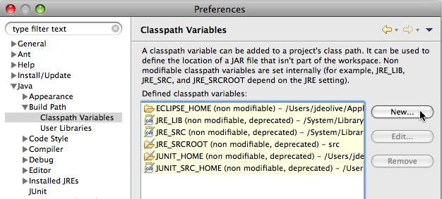
Create a classpath variable named “M2_REPO” and set the value to the location of the local Maven repository, and click
Ok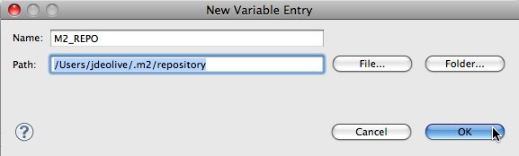
Click
Okto apply the new Eclipse preferencesRight-click in the
Package Explorerand clickImport...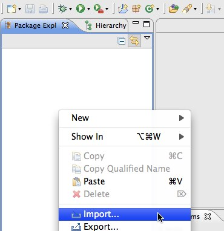
Select
Existing Projects into Workspaceand clickNext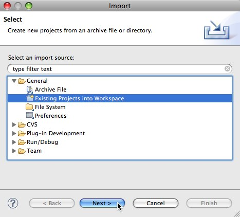
Navigate to the
geoserver/srcdirectory- Ensure all modules are selected and click
Finish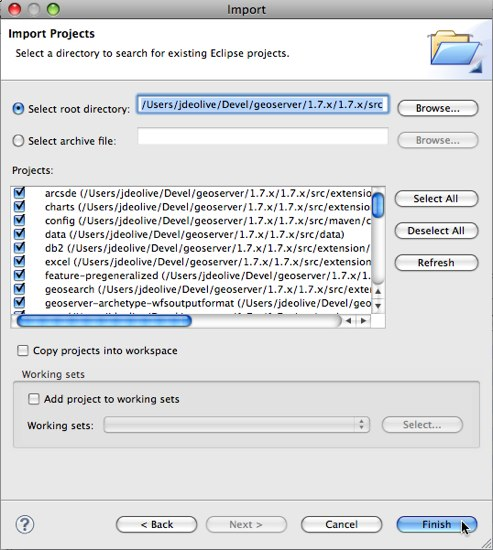
Run GeoServer from Eclipse
- From the
Package Explorerselect theweb-appmodule - Navigate to the
org.geoserver.webpackage Right-click the
Startclass and navigate toRun as,Java Application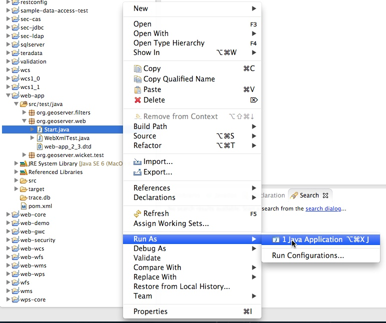
After running the first time you can return to the
Run Configurationsdialog to fine tune your launch environment (including setting a GEOSERVER_DATA_DIR).
Note: If you already have a server running on localhost:8080 see the Eclipse Guide for instructions on changing to a different port.
Run GeoServer with Extensions
The above instructions assume you want to run GeoServer without any extensions enabled. In cases where you do need certain extensions, the web-app module declares a number of profiles that will enable specific extensions when running Start. To enable an extension, re-generate the root eclipse profile with the appropriate maven profile(s) enabled:
The full list of supported profiles can be found in src/web/app/pom.xml.
Access GeoServer front page
- After a few seconds, GeoServer should be accessible at: http://localhost:8080/geoserver
- The default
adminpassword isgeoserver.
Intellij Quickstart
Import modules into Intellij
- Run the Intellij IDE
- Select
File -> New -> Project from Existing Sources.... Navigate to the
geoserver/src/pom.xmldirectory and clickOpen.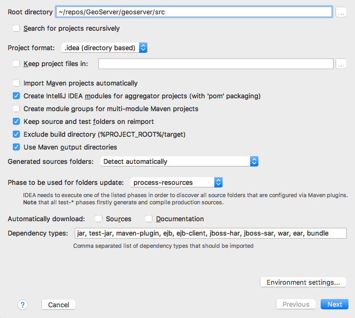
Click
Next, leaving all profiles unchecked.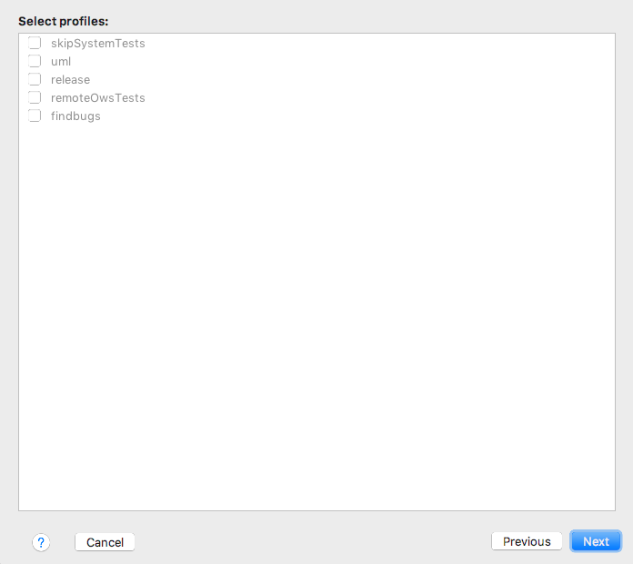
Click
Next, leaving the geoserver project checked.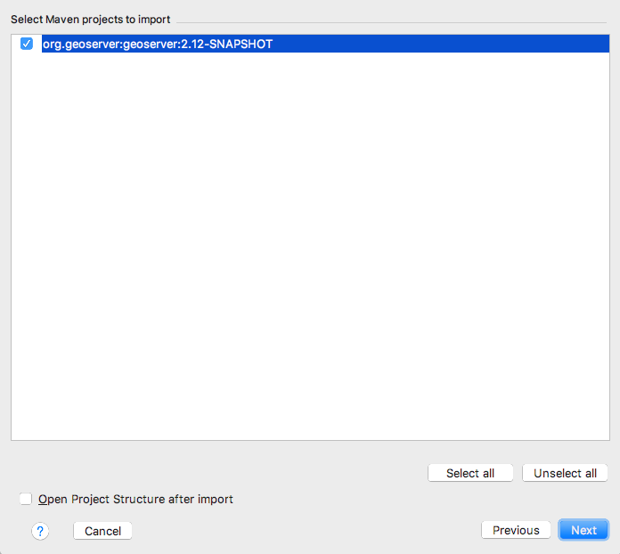
Click
Next, selecting the Java 8 JDK of your choice.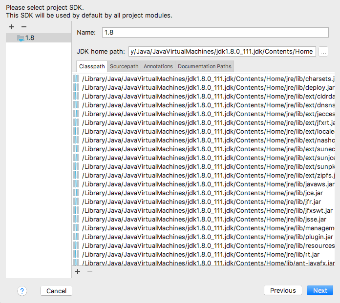
Click
Finish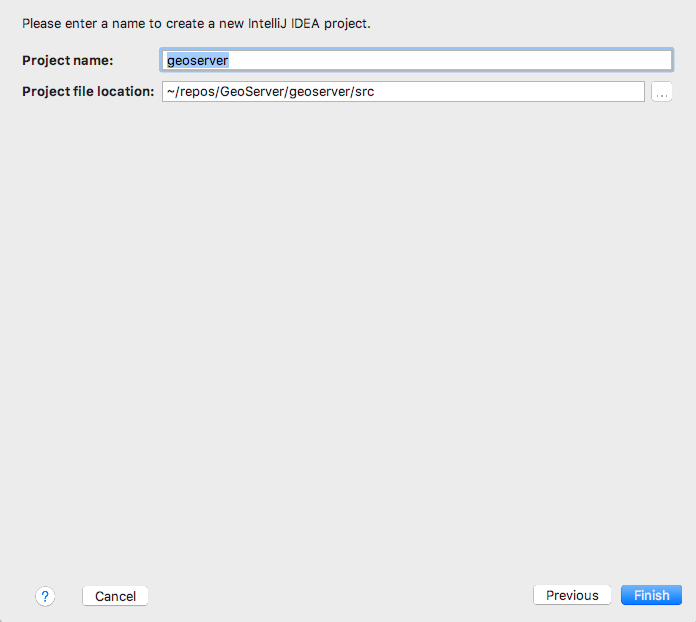
Run GeoServer from Intellij
- From the Project browser select the
web-appmodule - Navigate to the
org.geoserver.webpackage Right-click the
Startclass and click toRun 'Start.main()'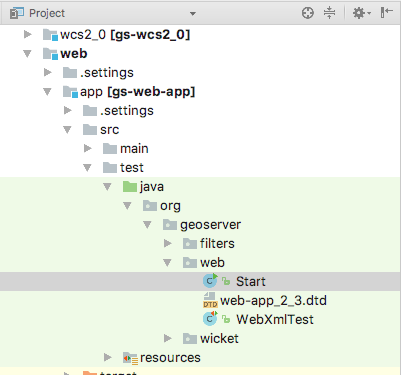
The first time you do this, geoserver will fail to start. Navigate to the
Runmenu, an clickEdit Configurations....Select the
Startconfiguration, and appendweb/appto theWorking Directory.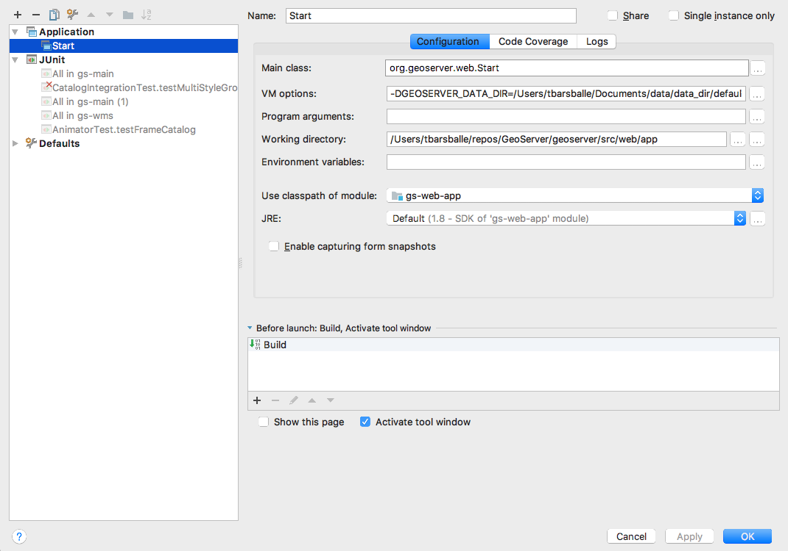
While you have the
Edit Configurationsdialog open, you can fine tune your launch environment (including setting a GEOSERVER_DATA_DIR). When 1. you are happy with your settings, clickOK.- You can now re-run GeoServer. Select
Run -> Run 'Start'
Note: If you already have a server running on localhost:8080 see the Eclipse Guide for instructions on changing to a different port.
Run GeoServer with Extensions
The above instructions assume you want to run GeoServer without any extensions enabled. In cases where you do need certain extensions, the web-app module declares a number of profiles that will enable specific extensions when running Start. To enable an extension, open the Maven Projects window (View -> Tool Windows -> Maven Projects) and select the profile(s) you want to enable.
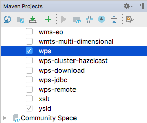
The full list of supported profiles can be found in src/web/app/pom.xml.
Access GeoServer front page
- After a few seconds, GeoServer should be accessible at: http://localhost:8080/geoserver
- The default
adminpassword isgeoserver.
Maven Guide
A reference for building GeoServer with Maven.
Installing Maven
See Tools.
Running Maven
Maven provides a wide range of commands used to do everything from compiling a module to generating test coverage reports. Most maven commands can be run from the root the source tree, or from a particular module.
Note: When attempting to run a maven command from the root of the source tree remember to change directory from the root the checkout into the
srcdirectory.
When running a command from the root of the source tree, or from a directory that contains other modules the command will be run for all modules. When running the command from a single module, it is run only for that module.
Building
The most commonly maven command used with GeoServer is the install command:1
mvn clean install
While the clean command is not necessary, it is recommended. Running this command does the following:
- compiles source code
- runs unit tests
- installs artifacts into the local maven repository
Skipping tests
Often it is useful to skip unit tests when performing a build. Adding the flag -DskipTests to the build command will only compile unit tests, but not run them:1
mvn -DskipTests clean install
Building offline
Maven automatically downloads dependencies declared by modules being built. In the case of SNAPSHOT dependencies, Maven downloads updates each time it performs the first build of the day.
GeoServer depends on SNAPSHOT versions of the GeoTools library. The automatic download can result in lengthy build time while Maven downloads updated GeoTools modules. If GeoTools was built locally, these downloads are not necessary.
Also, if GeoTools is being modified locally, then the local versions rather than SNAPSHOT versions of modules should be used.
This can be remedied by running maven in “offline mode”:1
mvn -o clean install
In offline mode Maven will not download external dependencies, and will not update SNAPSHOT dependencies.
Building extensions
By default, extensions are not included in the build. They are added to the build explicitly via profiles. For example the following command adds the restconfig extension to the build:1
mvn clean install -P restconfig
Multiple extensions can be enabled simultaneously:1
mvn clean install -P restconfig,oracle
A special profile named allExtensions enables all extensions:1
mvn clean install -P allExtensions
Recover Build
- After fixing a test failure; you can “resume” from a specific point in the build:
1
mvn install -rf extension/wps
Recover from a 301 Redirect
- A long standing bug in Maven from 2.0.10 handling of 301 errors when an artifact has been moved. The work around is to run Maven with the option:
1
mvn install -Dmaven.wagon.provider.http=httpclient
This is not a common issue.
Profiles
Additional profiles are defined in the pom.xml files providing optional build steps. Profiles are directly enabled with the -P flag, others are automatically activated based on platform used or a -D property being defined.
To build the release module as part of your build:1
-Drelease
To include remote tests:1
-PremoteOwsTests
Profiles are also used manage optional extensions community plugins:1
2
3
4-Pproxy
-Poracle
-Pupload
-Pwps
Additional profiles are defined in the pom.xml files providing optional build steps. Profiles are directly enabled with the -P flag, others are automatically activated based on platform used or a -D property being defined.
To build javadocs with UML graph:1
-Duml
To build the release module as part of your build:1
-Drelease
To include the legacy modules:1
-Plegacy
To include remote tests:1
-PremoteOwsTests
Profiles are also used manage several of the optional community plugins:1
2
3-Pupload
-Pwps
-Pproxy
Generating test coverage reports
Test coverage reports can be generated by running tests with the jacoco profile enabled:1
mvn test -Pjacoco
Coverage reports are generated in the target/site/jacoco directory of each module.
Eclipse
The maven eclipse plugin is used to generate eclipse projects for a set of modules:1
mvn eclipse:eclipse
After which the modules can be imported into an eclipse workspace.
A useful feature of the plugin is the ability to download associated source code for third party dependencies. This is done with the downloadSources flag:1
mvn -DdownloadSources eclipse:eclipse
Warning: The first time you enable the
downloadSourcesflag the build will take a long time as it will attempt to download the sources for every single library GeoServer depends on.
Building the web module
When the web module is installed, it does so with a particular configuration built in. By default this is the minimal configuration. However this can be customized to build in any configuration via the configId and configDirectory flags. For example:1
mvn clean install -DconfigId=release -DconfigDirectory=/home/jdeolive/geoserver_1.7.x/data
The above command builds the web module against the release configuration that is shipped with GeoServer. The configId is the name of the configuration directory to include, and the configDirectory is the parent directory of the configuration directory to include. The configDirectory can either be specified as an absolute path like in the above example, or it can be specified relative to the web module itself:1
mvn clean install -DconfigId=release -DconfigDirectory=../../../data
The above command does the same as the first, however references the configDirectory relative to the web module. This path, ../../../data, can be used if the GeoServer checkout has the standard layout.
Running the web module with Jetty
The maven jetty plugin can be used to run modules which are web based in an embedded Jetty container:1
2cd geoserver_2.0.x/src/web/app
mvn jetty:run
Note: This command must be run from the web/app module, it will fail if run from elsewhere.
The above command will run GeoServer with the built in data directory. To specify a different data directory the GEOSERVER_DATA_DIR flag is used:1
mvn -DGEOSERVER_DATA_DIR=/path/to/datadir jetty:run
Installing the Oracle module
To configure GeoServer to include the Oracle datastore extension module, do the following:
Obtain the appropriate Oracle JDBC driver (possibly by downloading from Oracle or from the GeoServer ORACLE-extension on http://geoserver.org/release/stable/). Install it in the Maven repository using the command:1
mvn install:install-file -Dfile=ojdbc7.jar -DgroupId=com.oracle -DartifactId=ojdbc7 -Dversion=12.1.0.2 -Dpackaging=jar -DgeneratePom=true
Configure the Eclipse project using:1
mvn -P oracle,oracleDriver eclipse:eclipse
(The oracle profile includes the GeoServer Oracle module, while the oracleDriver profile includes the proprietary Oracle JDBC driver. These are separate because there are situations where the Oracle JDBC JAR should not be included with the build.)
Finally, in Eclipse import the oracle module project. Refresh the web-app project to configure the dependency on the oracle project.
When GeoServer is run, Oracle should be provided as a Vector Data Source on the New Data source page
Eclipse Guide
A reference for developing GeoServer with Eclipse.
Importing modules
See the Eclipse section of the Maven Guide.
Running and debugging
Run or debug the class org.geoserver.web.Start in the web-app
module. The steps to do so are detailed in the Quickstart.
Running GeoServer with Extensions
By default, GeoServer will run without any extensions enabled. In order to run GeoServer with extensions, the web-app module declares a number of profiles used to enable specific extensions when running Start. To enable an extension, re-generate the root eclipse profile with the appropriate maven profile(s) enabled:1
% mvn eclipse:eclipse -P wps
The full list of supported profiles can be found in src/web/app/pom.xml.
Setting the data directory
If unset, GeoServer will default to the minimal directory inside of theweb-app module for its data directory. To change this:
Open
Debug Configurations...from the Eclipse menu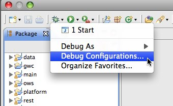
Select the
Startconfiguration, select theArgumentspanel and specify the-DGEOSERVER_DATA_DIRparameter, setting it to the absolute path of the data directory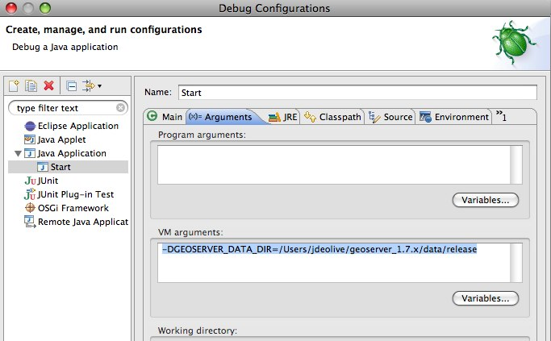
Changing the default port for Jetty
If unset, Jetty will default to port 8080. To change this:
- Open the
Argumentspanel of theStartconfiguration as described
in the above section. - Specify the
-Djetty.portparameter, setting it to the desired port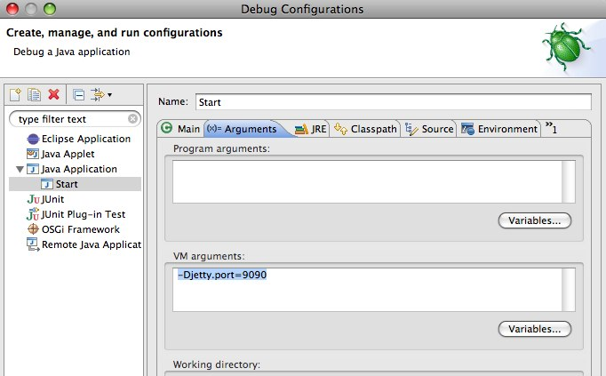
Configuring JNDI resources in Jetty
JNDI resources such as data sources can be configured by supplying a Jetty server configuration file named in the system property jetty.config.file, specified as a line in VM arguments in the Arguments panel of the launch configuration for Start (separate lines are joined when the JVM is launched). The path to the configuration file is relative to the root of the web-app module, in which the launch configuration runs. Naming factory system properties must also be configured for Jetty. For example, VM arguments could include:1
2
3-Djetty.config.file=../../../../../settings/jetty.xml
-Djava.naming.factory.url.pkgs=org.eclipse.jetty.jndi
-Djava.naming.factory.initial=org.eclipse.jetty.jndi.InitialContextFactory
The following Jetty server configuration file configures a JNDI data source java:comp/env/jdbc/demo that is a connection pool for an Oracle database:1
2
3
4
5
6
7
8
9
10
11
12
13
14
15
16
17
18
19
20
21
22
23
24
25
26
27<?xml version="1.0"?>
<Configure class="org.eclipse.jetty.server.Server">
<New class="org.eclipse.jetty.plus.jndi.Resource">
<Arg>java:comp/env/jdbc/demo</Arg>
<Arg>
<New class="org.apache.commons.dbcp.BasicDataSource">
<Set name="driverClassName">oracle.jdbc.OracleDriver</Set>
<Set name="url">jdbc:oracle:thin:@oracle.example.com:1521:demodb</Set>
<Set name="username">claudius</Set>
<Set name="password">s3cr3t</Set>
<Set name="maxActive">20</Set>
<Set name="maxIdle">10</Set>
<Set name="minIdle">0</Set>
<Set name="maxWait">10000</Set>
<Set name="minEvictableIdleTimeMillis">300000</Set>
<Set name="timeBetweenEvictionRunsMillis">300000</Set>
<Set name="numTestsPerEvictionRun">20</Set>
<Set name="poolPreparedStatements">true</Set>
<Set name="maxOpenPreparedStatements">100</Set>
<Set name="testOnBorrow">true</Set>
<Set name="validationQuery">SELECT SYSDATE FROM DUAL</Set>
<Set name="accessToUnderlyingConnectionAllowed">true</Set>
</New>
</Arg>
</New>
</Configure>
Jetty does not mandate a reference-ref in GeoServer WEB-INF/web.xml, so there is no need to modify that file. No Jetty-specific information is required inside the GeoServer web-app module or data directory, so JNDI resources can be tested under Jetty for later deployment under Tomcat. See also the tutorial Setting up a JNDI connection pool with Tomcat in the GeoServer User Manual.
Starting Jetty with an open SSL port
The SSL port used 8843.
- Open the
Argumentspanel of theStartconfiguration. - Specify the
-Dssl.hostnameparameter, setting it to the full qualified host name of the box running Jetty.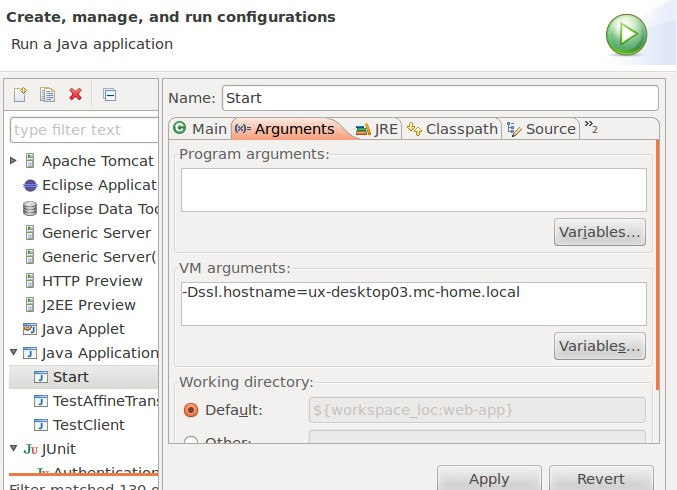
On first time startup, a key store is created in <home directory>/.geoserver/keystore.jks. The password is changeit and the key store contains a self signed certificate for the host name passed in the ssl.hostname parameter.
Test the SSL connection by opening a browser and entering https://ux-desktop03.mc-home.local:8843/geoserver. The browser should complain about the self singed certificate which does not hurt for test and development setups.
Eclipse preferences
Code formatting
- Download https://raw.githubusercontent.com/geotools/geotools/master/build/eclipse/formatter.xml
Navigate to
Java,Code Style,Formatterand clickImport...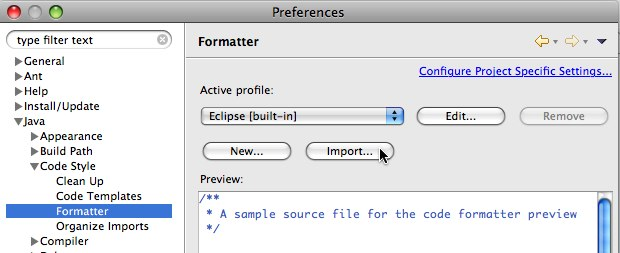
Select the
formatter.xmlfile downloaded in step 1Click
Apply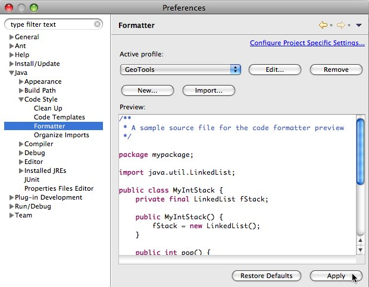
We follow “Sun Coding Conventions and a little bit more”:
- Code Conventions for the Java Programming Language
- but allow for 100 characters in width
- developers should use spaces for indentations, not tabulations. The tab width (4 or 8 spaces) is not the same on all editors.
For more information see GeoTools Coding Style page.
Code templates
- Download https://raw.githubusercontent.com/geotools/geotools/master/build/eclipse/codetemplates.xml
Navigate to
Java,Code Style,Code Templatesand clickImport...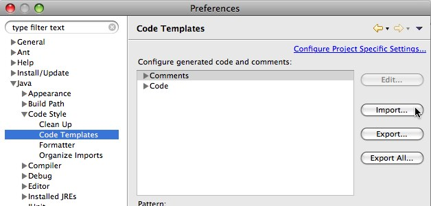
Select the
codetemplates.xmlfile downloaded in step 1Update the file header:
1
2
3
4/* (c) ${year} Open Source Geospatial Foundation - all rights reserved
* This code is licensed under the GPL 2.0 license, available at the root
* application directory.
*/Click
Apply
Text editors
- Navigate to
General,Editors,Text Editors - Check
Insert spaces for tabs - Check
Show print marginand setPrint margin columnto “100” - Check
Show line numbers - Check
Show whitespace characters(optional)Note: p class=”last”>Showing whitespace characters can help insure that unecessary whitespace is not unintentionaly comitted.
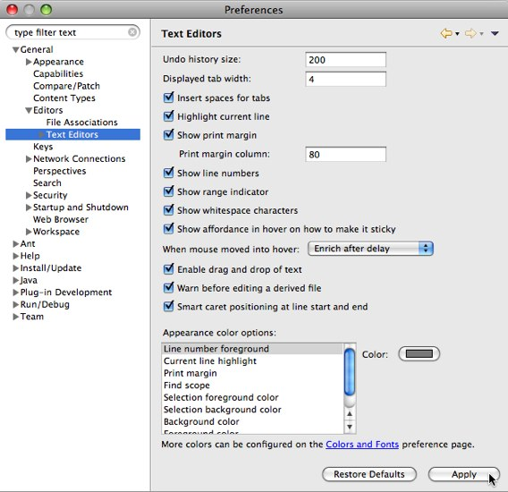
6.Click Apply
Compiler
Navigate to
Java,Compiler,BuildingExpand
Output folderand add “.svn/“ to the list ofFiltered resources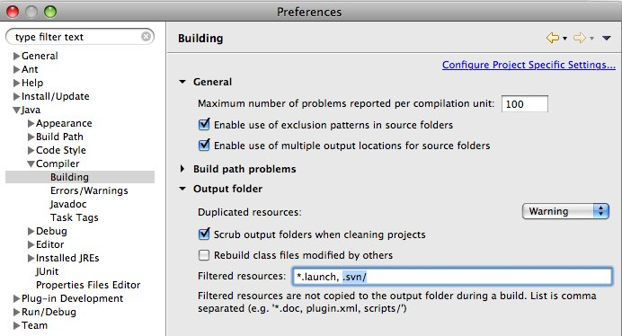
Click
Apply
Findbugs Guide
Findbugs is a static analysis tool for Java bytecode. It operates by searching compiled Java code for common programming errors such as dereferencing null pointers. In GeoServer we use Findbugs to augment the unit test suite.
We publish the analysis results as part of GeoServer’s nightly builds. You can view them online at http://gridlock.opengeo.org:8080/hudson/job/geoserver-trunk-findbugs/ . Click the FindBugs Warnings link in the left sidebar to view the bug > report for the latest bui: .
See also: More information on Findbugs is available at http://findbugs.sourceforge.net/.
Running the Findbugs Report Locally with Maven
Findbugs is integrated with Maven, enabling automatic running of Findbugs checks locally.
Generating a report
The basic form for running a report is to use the findbugs:findbugs goal for Maven. This requires bytecode to already be generated, so the full command is:1
$ mvn compile findbugs:findbugs
This command respects profiles for Community Modules. For example, you can generate a Findbugs report for the monitoring community module using:1
$ mvn compile findbugs:findbugs -Pmonitoring
Filters
Findbugs patterns vary in their reliability - sometimes a questionable construct is the right solution to a problem. In order to avoid distractions from bug patterns that don’t always indicate real problems, the GeoServer project maintains an bug filter that has been vetted by the project. When using Maven, you can enable this filter with:1
2$ mvn compile findbugs:findbugs -P findbugs \
-Dfindbugs.excludeFilterFile=/path/to/src/maven/findbugs/findbugs-excludeNone.xml
Note: Please note that it’s necessary to specify the full path to the exclude filter.
Browsing Bugs
The findbugs:findbugs goal generates a report of Findbugs violations in XML format, stored in target/findbugsXml.xml in each project. For manual inspection, Findbugs provides a graphical browser with descriptions of the potential problems found, and sorting/filtering/linking to sources for each detected violation. To launch it, switch into a module first and use the findbugs:gui Maven goal:1
2$ cd main/
$ mvn findbugs:gui
Warning: If you do not change directories Maven will traverse all modules and launch the findbugs browser for each in sequence!! If you do so, you can cancel with
Control+Cin the terminal window where Maven is running.
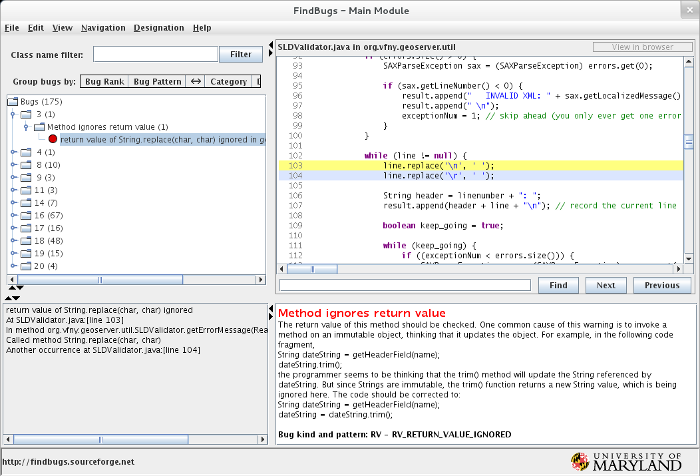
See also: More information on the Findbugs Maven plugin is available at http://mojo.codehaus.org/findbugs-maven-plugin/ .
Using the Findbugs Eclipse Plugin
Findbugs integrates with Eclipse Guide as well. This allows you to run bug reports and browse their results in the same tool you use to edit code.
For more information on installing and using the Findbugs plugin for Eclipse, see http://findbugs.sourceforge.net/manual/eclipse.html.
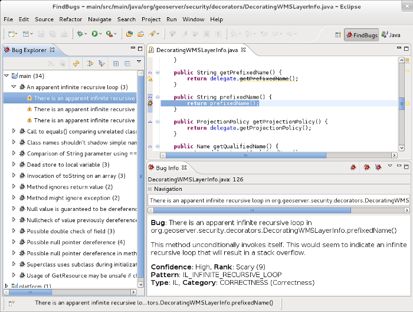
Fixing Bugs from Findbugs
We are always looking to eliminate bugs from GeoServer! If you want to help out, one way is to remove one of the Findbugs rules from the exclusion filter, then re-run the analysis locally. Once you fix all the bugs, submit a patch to GeoServer for review. A core developer will review the changes, and we’ll be able to make our “lax” Findbugs filter that much stricter.